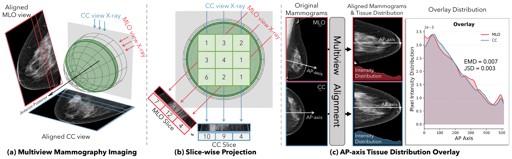
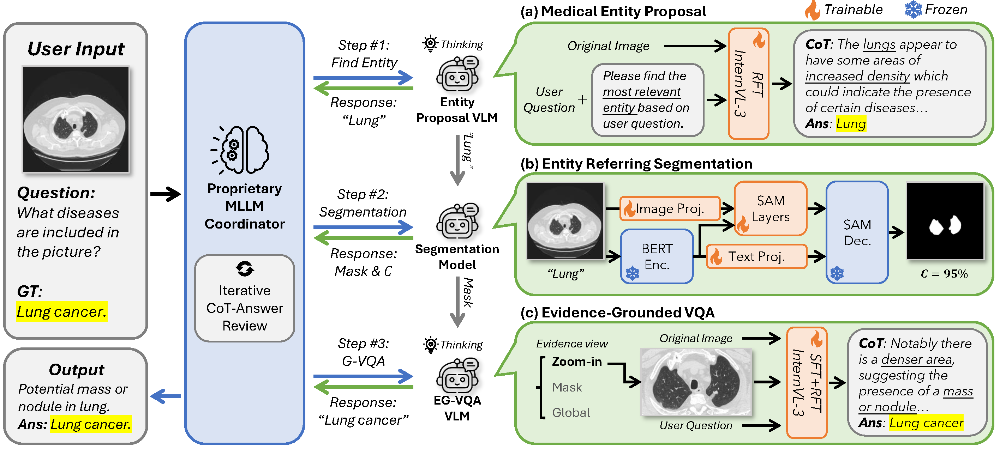
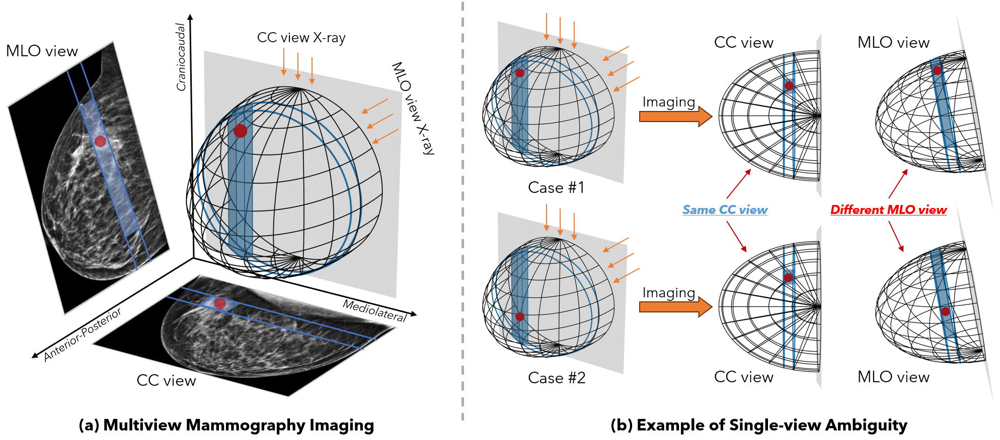
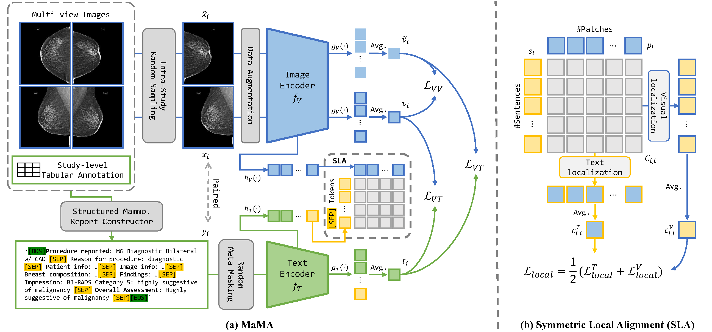

MammoFlow
Generating anatomically consistent paired mammograms from complementary views with flow matching.
I teach machines to
see, listen & reason.
Ph.D. candidate at Yale, building multimodal models for medical imaging and MLLM autoraters for video generation at Google Cloud.
multimodal reasoning + clinical evidence
views + scales + anatomy → alignment
./build_better_models.sh
I build models that connect images, language, and evidence—from mammography synthesis and clinical reasoning to audiovisual generation.
Ph.D. Software Engineering Intern in GenMedia, developing MLLM autoraters for video generation.
Ph.D. candidate in Biomedical Engineering, advised by Prof. Nicha C. Dvornek.
Bachelor’s degrees in Computer Science and Electrical & Computer Engineering. Two campuses, one long adventure.

Generating anatomically consistent paired mammograms from complementary views with flow matching.

Orchestrating proposal, segmentation, reasoning, and answer review around explicit clinical evidence.

Using mammography geometry to align local visual details with language across views.

Combining multi-view supervision and local alignment for mammography vision-language pre-training.
Open to good science & great side quests.